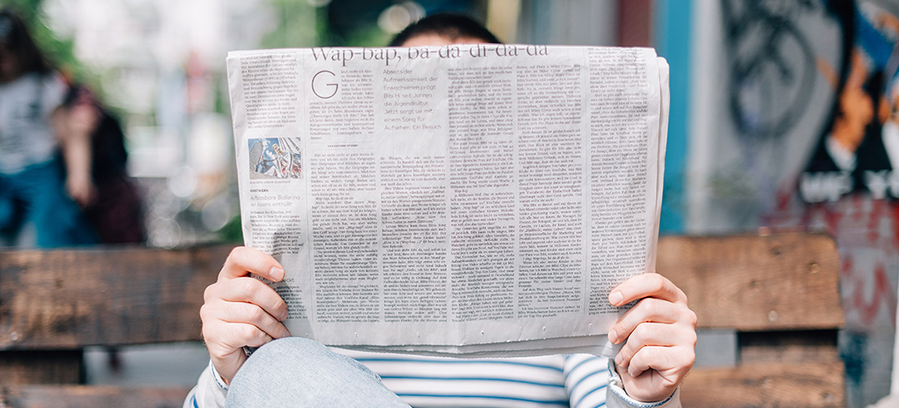

GoldenNews
"Bringing you the stories you care about"
Read Our Stories
"The allure of attracting new business and repeat customers may seem enticing to some, but as
third-party food apps continue to grow and compete in the fight for delivery domination, some restaurants
are looking to get away from utilizing these services."

"With the ease and convenience of these apps come side effects for some of the oldest forms of public transportation.
One study by a team from the University of Kentucky found the introduction of ride-hailing services like Uber and Lyft
have had a drastic impact on cities across the United States."
"The strike was first called by drivers in Los Angeles, who have held protests over a wage restructuring for Uber drivers, who
had their per-mile rates cut by 25 percent. Drivers in other countries, including England, are joining the strike with some holding
daylong work stoppages and others joining only for a few hours."